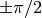
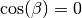
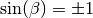
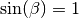
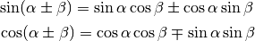
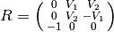
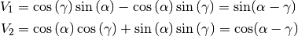
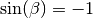

See also: http://en.wikipedia.org/wiki/Gimbal_lock
Euler angles have a major deficiency, and that is, that it is possible,
in some rotation sequences, to reach a situation where two of the three
Euler angles cause rotation around the same axis of the object. In the
case below, rotation around the  axis becomes indistinguishable in
its effect from rotation around the
axis becomes indistinguishable in
its effect from rotation around the  axis, so the and axis
angles collapse into one transformation, and the rotation reduces from
three degrees of freedom to two.
axis, so the and axis
angles collapse into one transformation, and the rotation reduces from
three degrees of freedom to two.
Imagine that we are using the Euler angle convention of starting with a
rotation around the axis, followed by the  axis, followed by the
axis.
axis, followed by the
axis.
Here we see a Spitfire aircraft, flying across the screen. The axis
is left to right (tail to nose), the axis is from the left wing tip
to the right wing tip (going away from the screen), and the axis is
from bottom to top:

Imagine we wanted to do a slight roll with the left wing tilting down
(rotation about ) like this:

followed by a violent pitch so we are pointing straight up (rotation
around axis):

Now we’d like to do a turn of the nose towards the viewer (and the tail away from the viewer):

But, wait, let’s go back over that again. Look at the result of the
rotation around the axis. Notice that the axis, as was, is now
aligned with the axis, as it is now. Rotating around the axis
will have exactly the same effect as adding an extra rotation around the
axis at the beginning. That means that, when there is a axis
rotation that rotates the axis onto the axis (a rotation of
 around the axis) - the and axes are “locked”
together.
We see gimbal lock for this type of Euler axis convention, when
, where  is the angle of rotation around the
axis. By “this type of convention” we mean using rotation around all 3
of the , and axes, rather than using the same axis twice -
e.g. the physics convention of followed by followed by axis
rotation (the physics convention has different properties to its gimbal
lock).
is the angle of rotation around the
axis. By “this type of convention” we mean using rotation around all 3
of the , and axes, rather than using the same axis twice -
e.g. the physics convention of followed by followed by axis
rotation (the physics convention has different properties to its gimbal
lock).
We can show how gimbal lock works by creating a rotation matrix for the
three component rotations. Recall that, for a rotation of  radians around , followed by a rotation around , followed
by rotation
radians around , followed by a rotation around , followed
by rotation  around , the rotation matrix
around , the rotation matrix  is:
is:
![R = \left(\begin{smallmatrix}\operatorname{cos}\left(\beta\right) \operatorname{cos}\left(\gamma\right) & - \operatorname{cos}\left(\alpha\right) \operatorname{sin}\left(\gamma\right) + \operatorname{cos}\left(\gamma\right) \operatorname{sin}\left(\alpha\right) \operatorname{sin}\left(\beta\right) & \operatorname{sin}\left(\alpha\right) \operatorname{sin}\left(\gamma\right) + \operatorname{cos}\left(\alpha\right) \operatorname{cos}\left(\gamma\right) \operatorname{sin}\left(\beta\right)\\\operatorname{cos}\left(\beta\right) \operatorname{sin}\left(\gamma\right) & \operatorname{cos}\left(\alpha\right) \operatorname{cos}\left(\gamma\right) + \operatorname{sin}\left(\alpha\right) \operatorname{sin}\left(\beta\right) \operatorname{sin}\left(\gamma\right) &- \operatorname{cos}\left(\gamma\right) \operatorname{sin}\left(\alpha\right) + \operatorname{cos}\left(\alpha\right) \operatorname{sin}\left(\beta\right) \operatorname{sin}\left(\gamma\right)\\- \operatorname{sin}\left(\beta\right) & \operatorname{cos}\left(\beta\right) \operatorname{sin}\left(\alpha\right) & \operatorname{cos}\left(\alpha\right) \operatorname{cos}\left(\beta\right)\end{smallmatrix}\right)](_images/math/39c30882239a5f61675699efe754c25fceb81773.png)
When ,  and simplifies to:
![R = \left(\begin{smallmatrix}0 & - \operatorname{cos}\left(\alpha\right) \operatorname{sin}\left(\gamma\right) + \pm{1} \operatorname{cos}\left(\gamma\right) \operatorname{sin}\left(\alpha\right) & \operatorname{sin}\left(\alpha\right) \operatorname{sin}\left(\gamma\right) + \pm{1} \operatorname{cos}\left(\alpha\right) \operatorname{cos}\left(\gamma\right)\\0 & \operatorname{cos}\left(\alpha\right) \operatorname{cos}\left(\gamma\right) + \pm{1} \operatorname{sin}\left(\alpha\right) \operatorname{sin}\left(\gamma\right) & - \operatorname{cos}\left(\gamma\right) \operatorname{sin}\left(\alpha\right) + \pm{1} \operatorname{cos}\left(\alpha\right) \operatorname{sin}\left(\gamma\right)\\- \pm{1} & 0 & 0\end{smallmatrix}\right)](_images/math/78420810d0bf45a0275e0e0a41038d211621db22.png)
When :
![R = \left(\begin{smallmatrix}0 & \operatorname{cos}\left(\gamma\right) \operatorname{sin}\left(\alpha\right) - \operatorname{cos}\left(\alpha\right) \operatorname{sin}\left(\gamma\right) & \operatorname{cos}\left(\alpha\right) \operatorname{cos}\left(\gamma\right) + \operatorname{sin}\left(\alpha\right) \operatorname{sin}\left(\gamma\right)\\0 & \operatorname{cos}\left(\alpha\right) \operatorname{cos}\left(\gamma\right) + \operatorname{sin}\left(\alpha\right) \operatorname{sin}\left(\gamma\right) & \operatorname{cos}\left(\alpha\right) \operatorname{sin}\left(\gamma\right) - \operatorname{cos}\left(\gamma\right) \operatorname{sin}\left(\alpha\right)\\-1 & 0 & 0\end{smallmatrix}\right)](_images/math/f8935a1bdf1b31b154d5f15684284e692e19853b.png)
From the angle sum and difference identities
(see also geometric proof, Mathworld treatment) we
remind ourselves that, for any two angles and :

We can rewrite as:

where:

We immediately see that and are going to lead the same
transformation - the mathematical expression of the observation on the
spitfire above, that rotation around the axis is equivalent to
rotation about the axis.
It’s easy to do the same set of reductions, with the same conclusion, for the case where  - see http://www.gregslabaugh.name/publications/euler.pdf.